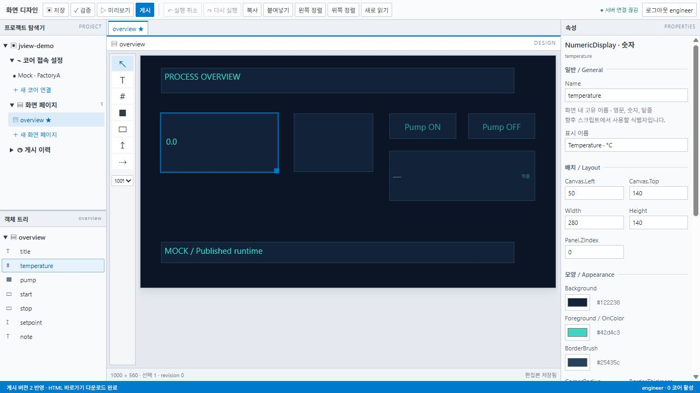

브라우저 화면 디자이너
다중 페이지와 팝업, 드래그 배치, 정렬, 실행 취소와 속성 편집으로 화면을 작성합니다.
WEB SCADA / HMI / JSOLUTION
JCore 데이터를 현장 운영 화면으로.
브라우저 Designer에서 페이지와 객체를 구성하고,
게시한 Runtime 화면에서 감시·조작합니다.
JCore 연동을 기반으로 태그·알람·이력을 활용합니다.

DESIGN / PUBLISH / OPERATE
다중 페이지와 팝업, 드래그 배치, 정렬, 실행 취소와 속성 편집으로 화면을 작성합니다.
텍스트·램프·버튼·도형과 Pump·Valve·Tank 심볼을 배치합니다. 색상·회전·표시 상태를 태그에 연결합니다.
코어 연결에서 태그를 가져와 바인딩과 스크립트에 사용합니다. CSV 가져오기·내보내기로 목록을 관리합니다.
OPERATION
현재 알람과 기간별 이력을 조회합니다. 실시간·이력 트렌드에서 시간 범위를 검색하고 확대합니다.
버튼·스크립트로 화면을 호출하고 태그 인자를 전달해 팝업을 여러 설비에 재사용합니다.
객체·페이지 이벤트와 글로벌 타이머를 구성합니다. 지원 구문과 JView API 범위에서 태그와 화면을 제어합니다.
서버에 설치하고 브라우저로 접속합니다. 운영 화면 게시와 코어 연결, 조작 로그인·권한 설정이 필요합니다. 기능 범위는 제품소개서와 해당 배포 버전에 따릅니다.